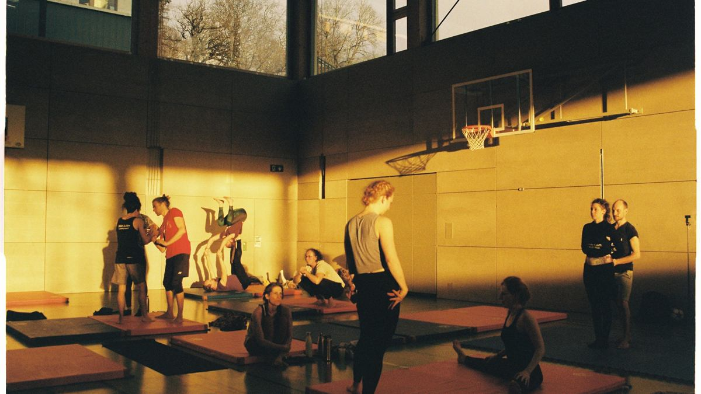

Wat is een steunstichting SBBI?
Een steunstichting SBBI is een tijdelijke stichting die een sport- of muziekvereniging opricht rond haar lustrum. Ze heeft één doel: geld inzamelen voor één bijzondere investering of uitgave.
Een lustrum — door de Belastingdienst “jubileum” genoemd — is de viering van het 5-jarig bestaan van een vereniging of een veelvoud daarvan. Bij een 40-jarig bestaan telt dus niet of 40 een “rond getal” is, maar dat 40 een veelvoud van 5 is.
De wettelijke basis staat in art. 5d AWR, met de nadere voorwaarden in art. 1f Uitvoeringsregeling AWR 1994.
Waarvoor is het bedoeld
Het ingezamelde geld is bestemd voor een bijzondere investering of uitgave ter gelegenheid van de viering. Dat is ruimer dan alleen “iets blijvends”. Ook een feestweek of een jubileumboek valt onder de tekst van de wet.
Wij adviseren vaak om te kiezen voor iets dat blijft — een nieuwe baan, een verbouwing van het clubhuis, een instrument dat jaren meegaat. Maar de regeling eist dat niet. Die keuze is aan de vereniging.
Wat het fiscaal betekent
Er zijn twee kanten.
Aan de kant van de stichting. Wat de steunstichting binnenkrijgt, is vrijgesteld van schenk- en erfbelasting (erfbelasting art. 32 lid 1 onder 9° SW; schenkbelasting art. 33 SW). Er blijft dus niets aan de belasting hangen — de bijdragen komen volledig ten goede aan de viering.
Aan de kant van de gever. Een eenmalige gift aan de steunstichting is in het aangewezen kalenderjaar aftrekbaar, zowel voor de inkomstenbelasting als voor de vennootschapsbelasting (art. 6.35 Wet IB 2001). Let op het verschil: een gift aan de vereniging zélf is niet aftrekbaar — alleen een gift aan de steunstichting.
Eerlijk over die aftrek. Er geldt een wettelijke drempel en een plafond. Voor een kleine gift levert de aftrek daardoor in de praktijk weinig tot niets op. De aftrek werkt vooral voor de grotere gever en voor de ondernemer die vanuit zijn bedrijf geeft. Zie het als een gericht voordeel voor een handvol grote gevers en lokale ondernemers, niet als een breed voordeel voor iedereen. Dat zeggen we liever vooraf dan dat we het mooier maken dan het is.
Hier ligt trouwens ook de plek voor de eigen sponsors van de vereniging: juist voor het lokale familiebedrijf en de ondernemer die de club steunt, kan de aftrek wél aantrekkelijk zijn.
De voorwaarden
Een stichting kwalificeert “indien en zolang” zij aan alle voorwaarden van art. 1f voldoet. Kort samengevat:
- ze is opgericht met één doel: geld inzamelen voor een bepaalde sport- of muziekvereniging;
- dat geld is uitsluitend bestemd voor een bijzondere investering of uitgave rond de viering van het 5-jarig bestaan of een veelvoud daarvan;
- de statuten beschrijven hoe aan de viering invulling wordt gegeven én noemen het kalenderjaar waarin de stichting wil kwalificeren;
- de bestuurders krijgen geen beloning, hooguit een onkostenvergoeding en een niet-bovenmatig vacatiegeld;
- het geld wordt besteed in het jaar van de viering, het jaar ervoor of uiterlijk het jaar erna;
- bij opheffing gaat een batig saldo naar een ANBI;
- bij de werving is duidelijk wat het doel is én om welk jaar het gaat;
- per vereniging kan er per viering maar één steunstichting SBBI zijn.
De inspecteur merkt de stichting aan per kalenderjaar en maakt het bestaan ervan bekend.
Voor wie geldt het
De regeling is smal. Ze geldt alleen voor sport- en muziekverenigingen die lid zijn van een landelijke, representatieve koepel. Voor sport loopt dat via NOC*NSF; voor muziek via bijvoorbeeld de KNFM, de Verenigde Nederlandse Muziekbonden en de FASO. De lijst van de Belastingdienst is hierbij leidend.
Buurtverenigingen, scouting, toneel of een dorpshuis vallen erbuiten — ook al zijn ze óók van maatschappelijk belang.
Daarnaast moet de vereniging zelf een SBBI zijn (art. 5c AWR): ze behartigt een sociaal belang, is niet aan winstbelasting onderworpen of daarvan vrijgesteld, en betaalt haar bestuur niet.
“Kan het bij ons?” — de eerste vraag
Een SBBI ben je van rechtswege. Er is geen register en geen beschikking. Dat klinkt makkelijk, maar het betekent ook dat je zélf moet kunnen vaststellen dat je vereniging kwalificeert. Dat hangt af van dingen als de winstgrenzen voor de vennootschapsbelasting en het lidmaatschap van een koepel.
De eerste vraag is dus niet hóé, maar óf. Die zoeken wij vooraf voor jullie uit — voordat er iets wordt beloofd.
Tijdelijk van aard
De aanmerking geldt ten hoogste één kalenderjaar. Daarbuiten is het een gewone stichting, zonder de fiscale status. Na de besteding en de verantwoording wordt de stichting weer netjes ontbonden.
Of dezelfde stichting bij een volgend lustrum opnieuw kan worden aangemerkt, is niet op voorhand zeker. Ook dat zoeken we vooraf uit, zodat je niet voor verrassingen komt te staan.
Geen advies
Dit is uitleg, geen fiscaal advies. De exacte toepassing hangt af van jullie situatie. Wij toetsen die, en laten waar nodig de belastingadviseur meekijken of vragen vooroverleg aan bij de inspecteur.
Een voorbeeld uit de praktijk
Honderden kleine giften, samen een groot bedrag.
Over dit voorbeeld
Dit is een geanonimiseerd voorbeeld uit de praktijk van anderen. LustrumMoment was hierbij niet betrokken. Het laat zien wat er mogelijk is; het is geen klantcase en geen referentie. De gegevens zijn bewust onherleidbaar gemaakt: generieke sector, geen regio, geen exact jaar, afgeronde bedragen.
Een sportvereniging vierde niet lang geleden een groot jubileum. Rond die mijlpaal richtte ze een tijdelijke steunstichting op om geld in te zamelen voor één grote investering.
Wat opviel: het geld kwam niet van een handjevol grote gevers. Het kwam van honderden leden, oud-leden en betrokkenen — veel bijdragen van rond de honderd euro. Bij elkaar liep dat op tot een bedrag in de orde van een ton.

Wat dit laat zien
Een lustrum brengt een gemeenschap in beweging. Mensen geven graag als het om hún club gaat, en veel kleine bijdragen worden samen iets groots.
Tegelijk laat het iets eerlijks zien. Dit werkte niet dankzij een fiscale truc. Voor giften van rond de honderd euro speelt de aftrek nauwelijks een rol — die werkt vooral voor de grotere gever en de lokale ondernemer. Wat het droeg, was betrokkenheid en vertrouwen.
En er is een keerzijde die vaak onderbelicht blijft. Wie zoveel geld ophaalt, moet het ook zorgvuldig besteden, netjes verantwoorden en de stichting daarna correct afronden. Juist dat laatste blijft in de praktijk vaak liggen.
Daar zet LustrumMoment op in: het moment benutten én het goed en eerlijk afmaken.
Benieuwd of het bij jullie kan?
De eerste vraag is niet hóé, maar óf. Die zoeken wij vooraf voor jullie uit — voordat er iets wordt beloofd.